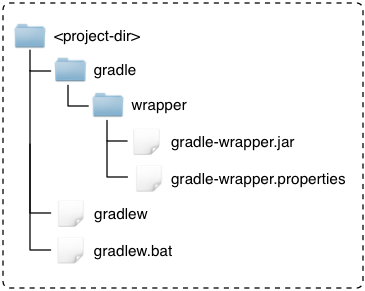

Slides
- Available in different formats
- Same content as today's presentation

The fundamentals of building projects with Gradle

About the project
Gradle is a build and automation tool.
Gradle can automate the building, testing, publishing, deployment and more of software packages or other types of projects such as generated static websites, generated documentation or indeed anything else.
User Guide
Build Language Reference (gradle.org/docs/current/dsl/)
Gradle Distribution
gradle-all vs. gradle-binWe encourage you to generate a build scan if you have a problem with a lab, so we can help you solve your problem. Just run your build with -Dscan.
01-create-build-scan
Print basic help information:
$ gradle helpPrint command line options:
$ gradle -?Print the available tasks in a project:
$ gradle tasksA way to bootstrap Gradle installations.

Usage example:
$ ./gradlew build$ gradle wrapper --gradle-version=3.102-wrapper
Makes builds start faster. Way faster.
For Gradle 1.x/2.x:
--daemon command line optionorg.gradle.daemon=true in gradle.properties-Dorg.gradle.daemon=true in GRADLE_OPTSThe daemon is enabled by default in Gradle 3.x.
Use gradle --status to see running daemons (3.x only).
Force shutdown with gradle --stop.
03-daemon-setup
org.gradle.api.Project object// does not compile:
println "Gradle
// compiles, fails when run with Groovy or Gradle:
println zipCode
// compiles, fails when run with plain Groovy:
println namebuild.gradlesettings.gradleapply plugin: "java"
apply plugin: "idea"
apply plugin: "maven"04-quickstart
Tasks are the basic unit of work in Gradle.
task helloWorld {
doLast {
println "Hello World!"
}
}task is a keyword in the Gradle DSL.
All tasks implement the Task interface.
Tasks have a list of actions.
task helloWorld {
doLast {
println "World!"
}
doFirst {
println "Hello"
}
}Most tasks have one useful main action.
doLast() and doFirst() can be used to decorate the action.
Execute tasks by specifying them on the command line.
$ gradle helloWorld
:helloWorld
Hello world!Save your fingers by only typing the bare minimum to identify a task.
task myNameIsPrettyLong {
doLast {
println "Long name"
}
}
task someOtherTask {
doLast {
println "Other task"
}
}
//running:
$ gradle mNIPL sOtherTCharacters between word boundaries can be dropped.
05-tasks
Most of the time, tasks will use an existing task type.
task copyFiles(type: Copy) {
// configure the task
}Task is of type Copy. Configure it using its API.
If you don't specify a type, you get a DefaultTask.
task helloWorld {
onlyIf { System.getProperty("be.nice") == "true" }
doLast { println "Hello" }
}The onlyIf() and doLast() methods are available for all tasks (i.e. part of the Task interface).
task copyFiles(type: Copy) {
from "sourceDir"
into "targetDir"
}The from() and into() methods are only available for Copy tasks.
The task's API allows the task to be configured.
task foo
task bar {
dependsOn foo
}A key concept to grasp.
06-build-lifecycle
What will happen here?
task bar {
doLast {
dependsOn foo
}
}Will foo execute before bar?
FileCollection, FileTree)Gradle provides support for common operations out of the box (e.g. zip, copy, delete).
Important properties:
projectDir (read-only) - the base directory of the projectbuildDir - the build output directory of the projectrootDir (read-only) - the base directory of the root project (multi-project)The buildDir is "$projectDir/build" by default.
In plugins, don't assume this. Use "$buildDir".
Don't do this:
new File("src/main/java/Thing.java")You don't know what the working directory of the JVM is.
Use:
project.file("src/main/java/Thing.java")Project.file(Object) always resolves relative to the projectDir.
Many tasks accept Object for file types; resolved by project.file().
Copies files from one or more locations, to one destination.
task copyLibs(type: Copy) {
from "libsDir", "docs/index.html", "/some.txt"
into "ide"
}Powerful API, including filtering and transforming.
Used very often in "standard builds".
API has a tree like structure.
task copyStuff(type: Copy) {
exclude "**/.svn" // default
into "targetDir"
into("targetSubDir") {
from "sourceDir"
}
into("targetSubDir2") {
from "sourceDir2", "someFile.txt"
}
into("targetSubDir3") {
from "sourceDir3"
include "**/*.jpeg"
exclude "**/obsoleteImages/*"
}
}Files can be mutated during copy.
task copyStuff(type: Copy) {
into "targetDir"
from("someDir") {
// Use Ant's HeadFilter
filter(HeadFilter, lines: 25, skip: 2)
}
from("otherDir") {
// Line by line transform
filter { line -> line.substring(5) }
}
from("anotherDir") {
// Groovy's SimpleTemplateEngine
// "$foo" -> "bar", "$red" -> "blue"
expand(foo: "bar", red: "blue")
}
}Files can be renamed and/or moved.
task copyStuff(type: Copy) {
into "targetDir"
from("someDir") {
rename "(.*)_OEM_BLUE_(.*)", '$1$2'
}
from("otherDir") {
eachFile { FileCopyDetails copyDetails ->
if (copyDetails.name.length() > 10) {
copyDetails.path = "longFileNames/$copyDetails.name"
}
}
}
}eachFile can also exclude files, deal with duplicates, etc.
07-copy
Permissions at the destination can be specified.
task copyStuff(type: Copy) {
into("targetDir")
into("bin") {
from "src/bin"
fileMode = 0755
dirMode = 0755
}
}Particularly useful when creating archives (covered soon).
Same as Copy, except that destination will only contain copied files (and nothing else).
task ide(type: Sync) {
from sharedNetworkLibsDir
into "ide"
}Full copy (not incremental like rsync).
Task type for each archive type (Zip, Jar, War, Tar).
task zipLibs(type: Zip) {
into("ide") {
from("libsDir", "docs/index.html")
}
from "src/license.txt"
}Zip content:
Base plugin adds conventional naming defaults.
apply plugin: "base"
version = "1.0"
task zipLibs(type: Zip) {
baseName = "services"
appendix = "api"
// …
}Pattern: «baseName»-«appendix»-«version»-«classifier».«extension»
Zip/Tar (by base plugin)
"build/distributions"Jar/War (by java-base plugin)
"build/libs"Destination directory is customizable:
apply plugin: "base"
task myZip(type: Zip) {
destinationDir = file("$buildDir/specialZips")
}Use zipTree() and tarTree() to specify archive content.
task unpackArchives(type: Copy) {
from zipTree("zip1.zip"), zipTree("jar1.jar")
from(tarTree("tar1.tar")) {
exclude "**/*.properties"
}
from "zip2.zip"
into "unpackDir"
}zipTree() and tarTree() can be used to merge archives.
task mergedZip(type: Zip) {
from zipTree("someZip.zip")
from zipTree("otherZip.zip")
}Typical use case: fat jars.
The basis of Java development with Gradle.
A logical compilation/processing unit of sources.
sourceSets {
main {
java {
srcDir "src/main/java" // default
}
resources {
srcDir "src/main/resources" // default
}
}
}The java plugin provides a set of “lifecycle†tasks for common tasks.
clean - delete all build outputclasses - compile code, process resourcestest - run testsassemble - make all archives (e.g. zips, jars, wars etc.)check - run all quality checks (e.g. tests + static code analysis)build - combination of assemble & checkBuilt-in support for JUnit and TestNG.
08-java-plugin
apply plugin: 'cpp'
apply plugin: 'c'
apply plugin: 'assembler'
apply plugin: 'windows-resources'Each language plugin is composed of separate plugins that add language support, model support, tool chains, etc.
'Standard' Gradle (1.0):
Model Driven Approach:
Task Graph is still used at execution time
All of these are configured via the model containers.
NativeExecutableSpec is one type of native component
components container with type NativeExecutableSpec.model {
components {
myApplication(NativeExecutableSpec)
}
}Given an NativeExecutableSpec component, Gradle can build one or more NativeExecutableBinarySpec variants
NativeLibrarySpec is a type of native component
components container with type NativeLibrarySpec.model {
components {
myLibrary(NativeLibrarySpec)
}
}:compileDebugMainExecutableMainCpp
:linkDebugMainExecutable
:debugMainExecutable
:installDebugMainExecutableAll tasks are incremental (skipped if inputs and outputs are up-to-date)
By default, for a language Y, there is a LanguageSourceSet named sources.Y in each native component
model {
components {
hello(NativeExecutableSpec) {
sources {
cpp
c
asm
}
}
}
}These are implicitly configured for you when the language plugin is applied.
model {
components {
hello(NativeExecutableSpec) {
sources {
additionalCpp(CppSourceSet)
extraC(CSourceSet)
x86Assembler(AssemblerSourceSet)
}
}
}
}X.sources.Y, the default sources are 'src/X/Y'X.sources.Y, the default headers are 'src/X/headers'Default source code locations for LanguageSourceSet hello.sources.cpp:
src/
hello/
cpp/
source3.cpp
source4.cpp
headers/
header1.h
header2.h09-executable
Gradle supports managed and unmanaged dependencies.
Managed dependencies are superior as their use can be automated and reported on.
dependencies {
compile fileTree(dir: "lib", include: "*.jar")
}Can be useful during migration.
dependencies {
compile "org.springframework:spring-core:4.0.5.RELEASE"
compile group: "org.springframework", name: "spring-web",
version: "4.0.5.RELEASE"
}Group/Module/Version
Dependencies are assigned to configurations.
configurations {
// default with "java" plugin
compile
runtime
testCompile
testRuntime
}
dependencies {
compile "org.springframework:spring-core:4.0.5.RELEASE"
}See Configuration in DSL reference.
Gradle (by default) fetches dependencies of your dependencies. This can introduce version conflicts.
Only one version of a given dependency can be part of a configuration.
Options:
Per dependency…
dependencies {
compile("org.foo:bar:1.0") {
transitive = false
}
}Configuration-wide…
configurations {
compile.transitive = false
}Per dependency…
dependencies {
compile "org.foo:bar:1.0", {
exclude module: "spring-core"
}
}Configuration-wide…
configurations {
compile {
exclude module: "spring-core"
}
}Per dependency…
dependencies {
compile("org.springframework:spring-core:4.0.5.RELEASE") {
force = true
}
}Configuration-wide…
configurations {
compile {
resolutionStrategy.force "org.springframework:spring-core:4.0.5.RELEASE"
}
}Automatic conflict resolution can be disabled.
configurations {
compile {
resolutionStrategy.failOnVersionConflict()
}
}If disabled, conflicts have to be resolved manually (using force, exclude etc.)
Configuration-specific rules can be applied to all configurations.
configurations {
all {
resolutionStrategy.failOnVersionConflict()
}
}all is a special keyword, meaning all things in the configuration container.
Default location: ~/.gradle/caches/....
An opaque cache, not a repository.
Changing dependencies are mutable.
Version numbers ending in -SNAPSHOT are changing by default.
dependencies {
compile "org.company:some-lib:1.0-SNAPSHOT"
compile("org:somename:1.0") {
changing = true
}
}Default TTL is 24 hours.
Dynamic dependencies do not refer to concrete versions.
Can use Ivy symbolic versions.
dependencies {
compile "org.company:some-lib:2.+"
compile "org:somename:latest.release"
}Default TTL is 24 hours.
configurations.all {
resolutionStrategy.cacheChangingModulesFor 4, "hours"
resolutionStrategy.cacheDynamicVersionsFor 10, "minutes"
}--offline - don't look for updates, regardless of TTL--refresh-dependencies - look for updates, regardless of TTLView the dependency graph.
$ gradle dependencies [--configuration «name»]View a dependency in the graph.
$ gradle dependencyInsight --dependency «name» [--configuration «name»]Built in tasks.
repositories {
jcenter()
mavenCentral()
maven {
name "codehaus"
url "http://repository.codehaus.org"
}
ivy {
url "http://repo.mycompany.com"
layout "gradle" // default
}
flatDir(dirs: ["dir1", "dir2"])
}
10-dependencies
apply plugin: "maven"
uploadArchives {
repositories {
mavenDeployer {
repository(url: "http://my.org/m2repo/")
}
}
}artifactory-publish pluginsubprojects {
apply plugin: "java"
dependencies {
testCompile "junit:junit:4.7"
}
test {
jvmArgs "-Xmx512M"
}
}configure(nonWebProjects()) {
jar.manifest.attributes Implementor: "Gradle Inc."
}
def nonWebProjects() {
subprojects.findAll { !it.name.startsWith("web") }
}dependencies {
compile "commons-lang:commons-lang:2.4"
compile project(":shared")
}$ gradle build
$ gradle buildDependents
$ gradle buildNeeded$ gradle build
$ gradle classes
$ gradle war$ gradle :api:classes//declare projects:
include "api", "shared", "services:webservice"
//Everything is configurable:
//default: root dir name
rootProject.name = "main"
//default: "api" dir
project(":api").projectDir = file("/myLocation")
//default: "build.gradle"
project(":shared").buildFileName = "shared.gradle"
A selection of useful features not covered so far.
Create build from template, convert Maven build.
$ gradle init --type java-library
$ gradle init --type pom$ gradle build --continueEspecially useful for CI builds.
Run independent tasks from different projects in parallel.
$ gradle build --parallelIncubating feature; some restrictions apply.
When the build completes, instead of exiting, watch the inputs of executed tasks and re-run the build when an input changes.
$ gradle build --continuousIncubating feature.
Limitations:
Gradle ships with many useful plugins.
Some examples:
java - compile, test, package, upload Java projectscheckstyle - static analysis for Java codemaven - uploading artifacts to Apache Maven repositoriesscala - compile, test, package, upload Scala projectsidea and eclipse - generates metadata so IDEs understand the projectapplication - support packaging your Java code as a runnable applicationc / cpp - support building native binaries using gcc, clang or visual-cppMany more, listed in the Gradle User Guide.